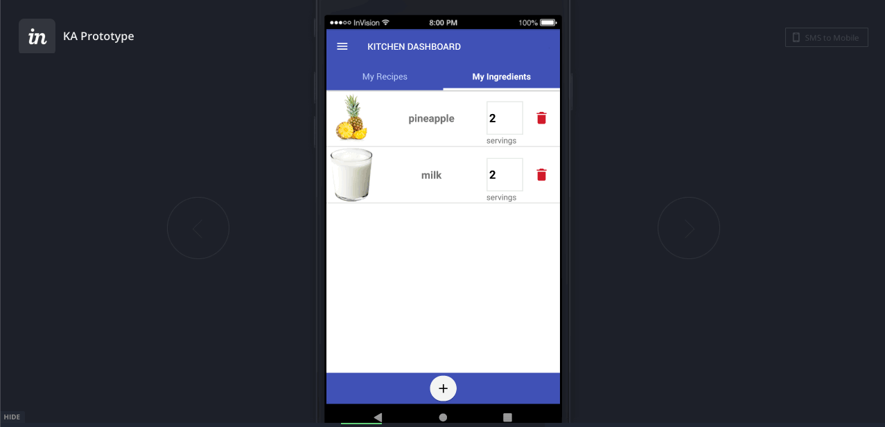
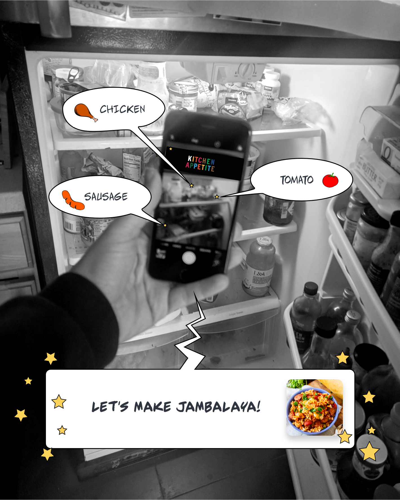
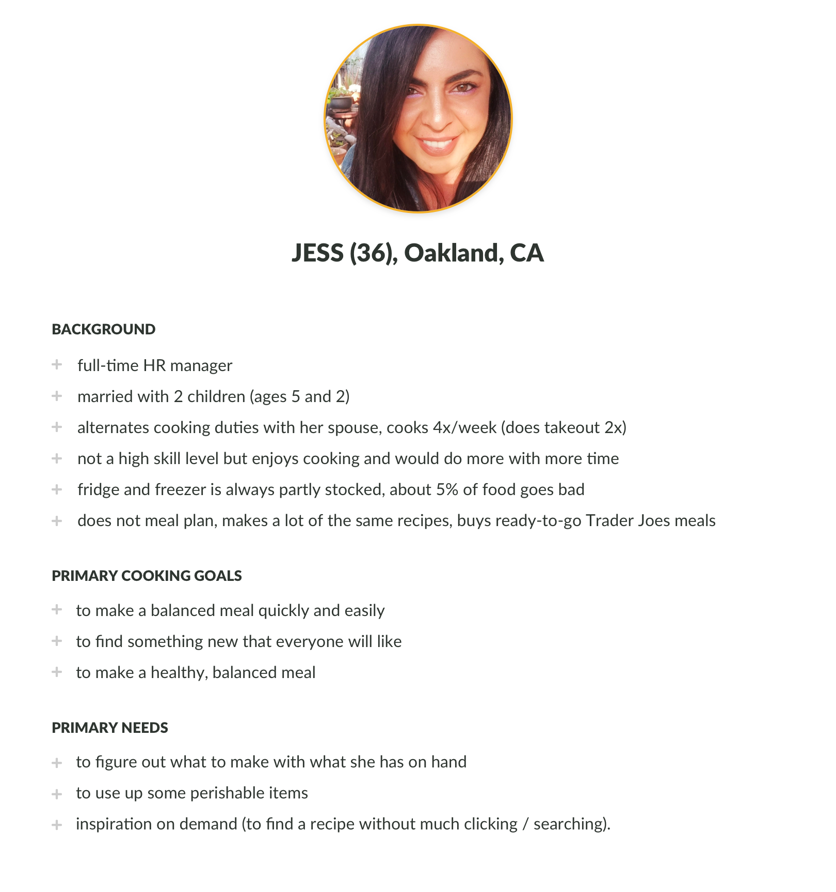
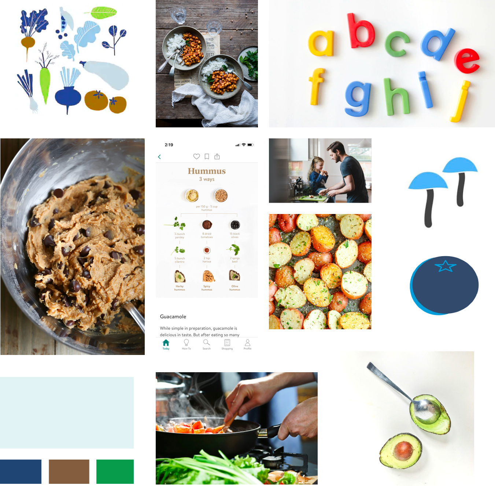
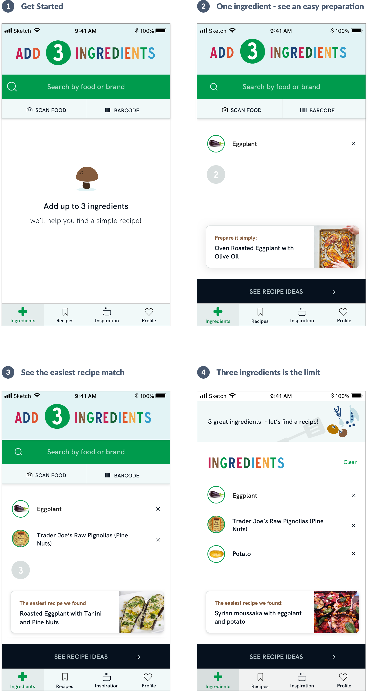

Kitchen Appetite is a Kickstarter-funded project by entrepreneur Ben Gulick. This app helps home cooks discover simple dishes they can create with ingredients they have on hand. Perfect for quarantine!
The 'before'
An overseas development team built a fully-functional app from a set of lo-fidelity wireframes (from another designer). Once built, it was clear that the UX and UI had problems, and the visual identity needed definition.
When Ben contacted me for design help, the app functionality was almost complete. We agreed we needed to pause and rediscover what this app was and who it was for.

In the past few months, I've done the following work for Kitchen Appetite:
1. Defined the user persona through various research methods.
2. Refocused the product value proposition to best meet the needs of our persona.
3. Redesigned and tested a new interface design.
4. Worked with Ben and his logo designer to define a visual identity for Kitchen Appetite.
5. Assumed product management of the redesign with the dev team in India.
Discovering our user, refocusing our product
The original product vision
The original concept envisioned an effortless recipe-finding experience where a user could 'scan' ingredients they have on hand using their phone camera (i.e. Shazam for your fridge).

After discussing Ben's vision, I tested the prototype and found some key problem areas:
1. The image-recognition API was error-prone (so were others I tested).
Current technology could not achieve the effortless food-scanning experience envisioned by Ben. For this technology to be useful (and not just a gimmick), it would have to be as easy and accurate as typing into a search bar.
2. Searching recipes by ingredients had limitations.
Users could save unlimited ingredients, but could only search recipes by 6 ingredients. This led to an awkward 2-step process to search. I also questioned the utility of saving a long list of ingredients (food in the fridge changes quickly).
3. The solution lacked a problem
Even if this product existed as envisioned, it was not clear what kind of cook the product was for or the pain point that would make them open up the app to scan ingredients.
Survey, interviews and persona development
To discover more about the user persona I developed a survey to give to Kitchen Appetite backers (from Kickstarter) and social media communities. Although this sample was not representative of all possible home cooks, it was a starting place from which the minimum viable product could be based. The goal was to discover more about the needs and painpoints around cooking and recipe-finding, and validate a few assumptions Ben had.
One key assumption was that not knowing what to cook is a big problem. In our sample of 22 survey respondants. This assumption got some support. When asked to select what their biggest barrier to cooking was, 47% chose “Not enough time” but second to that, 24% chose “not knowing what to cook” was their biggest barrier.
Exploratory questions about habits and goals provided further information about the contexts and goals of the respondants. Below are two examples.
Insights such as these helped us understand the type of situation our home cook persona was. They are most likely working people, cooking solo, for others. The goal of making a meal everyone will like was more pressing than the goal of making something interesting or amazing. When asked for recipe hunting techniques, the top two were "meals under 30 minutes" and "recipes for ingredients you have onhand."
I conducted 5 semi-structured interviews, and reconnected with Ben to create a user persona.

Design and User Testing
Next, I created several user stories and scenarios to imagine Jess using this app. The word SIMPLE kept coming up. Jess isn't using this app for a gourmet meal, she's just trying to improvise. We thought, "what if we just limit the number of ingredients to 3?". This kept the experience simple, then also suggest the SIMPLEST recipe first. This will help Jess get her needs met quickly.
This is only a portion of the wireframe shown. One my of key design choices was to downplay the food and scanning technology. Although this was the original vision for the app, it would take more R&D and machine learning to add ingredients with the speed and accuracy of a search bar.
I brought this wireframe to the development team. They found no real problems except one. The image scanner needed a button in order to limit the number of API calls to the image recognition service we were using. That was simple enough to add.
Clickable prototypes and remote user testing sessions were conducted with 5 individuals. 5/5 were able to add an ingredient using all 3 methods. The participants also appreciated the narrow focus of the app and emphasis on simple recipes only.
Visual Design and Hi-fidelity Mockups
Simple, Joyful, Supportive
These were the three words Ben felt captured the Kitchen Appetite brand. He wanted the vibe to touch on nostalgia, family in the kitchen, and something playful but mature. The logo inspiration was colored alphabet fridge magnets. The logo had many wonderful colors to play with.

I created a mood board to try and capture the vibe and color palette. I took the green, brown, and blue from the logo and a lighter blue for a simple palette. I decided that ingredient photography could use simple backgrounds and food photography would be more complex, showing process (stirring) or plating on casual-looking tables or counters. I felt we could also use custom illustration for Kitchen Appetite's ingredient guides (in process), and thought a simple, abstract illustration style would work well with the brand.
I applied the style and developed a design system. Below are the final mockups for adding ingredients.

The previous prototype of kitchen appetite allowed for unlimited ingredients (but a limit of 6 ingredients to search). This limited allowance of 3 ingredients eliminated this clutter, and the popup result of the simplest recipe idea focused the experience to meet the needs of our persona. Below are the other screens in the app.
I am currently managing the team in India to implement these designs. We hope to begin a closed beta test in August 2020 with the Kickstarter Backers. Initially we will be evaluating the the usefulness of the app UI and the quality of recipe matches. This has been a really fun project to be a part of!